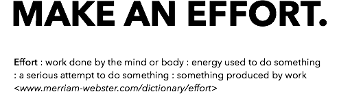
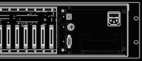
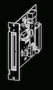
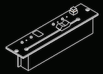
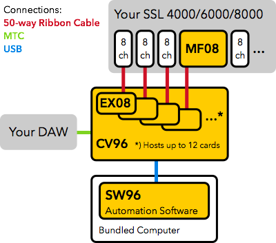

The Problem
- You've got an SSL 4000/6000/8000 without a working computer.
- Your SSL computer connections and interface doesn't mate with the rest of your studio.
- Your SSL computer software doesn't match the speed and convenience of your studio setup.
- SSL VCA automation is cool, it does what it's supposed to do. But the visual feedback and the interactive feel is flat and monochrome.

The Solution

The Automan CV96 SSL Configuration is a new automation system for the vintage SSL 4000, 6000 and 8000 series consoles.
- Automan CV96 is a fan less, small sized (3U 19") connection hub between old school and modern workflow.
- Automan CV96 is a modular stand-alone unit. It can be configured in several ways.
- Automan CV96 brings a DAW workflow into analog mixing. Do your rides on real motor faders, in the sweet spot.
- Automan CV96 reads MTC and uses an integrated sync similar to expensive external MIDI-SMPTE boxes.
- Automan CV96 talks HUI.
- Automan CV96 is delivered complete with a stand-alone computer and fresh ribbon cables.
- Automan CV96 is driverless on all platforms and network ready.
- Automan CV96 is so modular and flexible it can host cards that control whatever you can imagine. Total Recall, EMT plates, modular synth systems, Lexicon reverbs and more.
- Automan CV96 is doing all kinds of cool things now, but it's just the beginning. We do not know what needs to be controlled in the future, but we know Automan CV96 can control it.
- Automan CV96 is installed before lunchtime.
- Did we mention the flexibility? The Automan CV96 base unit can be used together with any analog desk. So, there's a wide second hand market.
What is the Automan CV96 - SSL Configuration?
Automan CV96 - SSL configuration is the base unit (CV96) loaded with one or more I/O-cards (EX08) and the optional set of 8 motor faders (MF08). The CV96 can host up to 12 cards (supporting up to 96 channels). Automan EX08 talks to 1 bank (8 channels) of the SSL console. Automan EX08 is a card designed for the SSL 4/6/8000 series. With 8 analog CV in & out plus a couple of switch and LED lines it's plug and play with the original computer interface.
Automan EX08 talks to 1 bank (8 channels) of the SSL console. Automan EX08 is a card designed for the SSL 4/6/8000 series. With 8 analog CV in & out plus a couple of switch and LED lines it's plug and play with the original computer interface.
Automan MF08 is a kit of 8 motor faders that is compatible with the SSL VCA fader (same size and connectors). Automan MF08 is best placed where the VCA group faders are. Here they double as manual VCA groups faders and a control surface for the rest of your console. Automan MF08 shows you all information you need. Channel number, exact fader position (<0.1dB steps) , current offset to null in 0.1 dB accuracy and auto status (manual, auto, touch and read). Automan EX08 will automatically find the installed MF08:s. Super easy installation.
Automan TR96 is a Total Recall-card planned to be released Q2 2015. Together with the SW96TR Software it adds full Total Recall support to the system.
SYSTEM SETUP

CONTACT US
Send email to:
info@automanefforts.com
Send flowers to:
Automan Efforts
Kransbindarvägen 5
126 36 Hägersten
SWEDEN